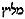

Inny Pocieszyciel
J 14:16-17 (UBG)
16. A ja będę prosił Ojca i da wam innego Pocieszyciela, aby z wami był na wieki;
17. Ducha prawdy, którego świat nie może przyjąć, bo go nie widzi ani go nie zna. Wy jednak go znacie, gdyż z wami przebywa i w was będzie.
W języku greckim słowo oddane powyżej jako “Pocieszyciel” to parakletos. W Nowym Testamencie zostało ono użyte jeden raz w stosunku do Ducha Świętego, oraz jeden raz w stosunku do Pana Jezusa (1J 2:1). Zdaniem części trynitarian te dwa czynniki: a) znaczenie słowa Parakletos oraz b) drugi osobowy desygnat tego słowa, wskazują na osobowość tego, który się pod tym określeniem ukrywa. Czy jednak rzeczywiście jest to prawda?
Pocieszyciel – znaczenie słowa źródłowego
Przede wszystkim musimy przeanalizować sam termin “Pocieszyciel”. Słowo oddane w powyższym przekładzie jako “Pocieszyciel” zostało przetłumaczone z greckiego wyrazu parakletos i jego znaczenie jest znacznie szersze niż tylko wspomniany “pocieszyciel”. William Barclay opisuje je w taki oto sposób:
“Jezus nie zostawia nas w tej walce o życie chrześcijańskie samych. Posyła nam Pomocnika. W jęz. greckim wyraża to słowo parakletos, które jest praktycznie nieprzetłumaczalne. Nasze tłumaczenie podaje Pocieszyciel, które nie jest dokładnym tłumaczeniem. Moffat tłumaczy Pomocnik. Dopiero kiedy dokładnie zbadamy znaczenie greckiego słowa parakletos, dowiemy się o bogactwie nauki o Duchu Świętym. Dosłownie znaczy to – ten, który jest przywołany. Grecy używali tego słowa w wielu różnych znaczeniach. Parakletos może oznaczać np.: świadka w sądzie lub też adwokata, przywołanego, w celu obrony przed poważnym wyrokiem, mógł to być ekspert zawołany, w celu zaradzenia trudnej sytuacji, mogła to być osoba przywołana, aby na przykład, dodać otuchy przygnębionym i załamanym żołnierzom […] Pocieszyciel był kimś, kto wskazywał jak przygnębiony może zdobyć odwagę. Dzisiaj pociecha kojarzy się przede wszystkim ze smutkiem, pocieszyciel zaś to ten, który współczuje gdy ktoś jest smutny. Bez wątpienia, Duch Święty czyni to, ale ograniczyć Jego działanie tylko do tej funkcji byłoby pomniejszeniem Jego znaczenia[1].
Remigiusz Popowski definiuje to słowo podobnie do Barclay’a jako: “zdolny do udzielania zachęty, odwagi, pomocy; zdolny do pokrzepiania; orędownik, rzecznik, pocieszyciel”[2].
Zacznijmy od tego, że w Nowym Testamencie znajdujemy trzy terminy zbudowane na bazie słów para (“przy, obok, blisko”) i kaleo (“wzywać, wołać, powoływać”). Pierwszym z nich jest wspomniany już parakletos. Dwa inne to czasownik parakaleo oraz rzeczownik paraklesis. Jak podpowiada nasza intuicja językowa zarówno w pierwszym jak i drugim przypadku źródłem czynności bądź aktu określanego tymi słowami może być również czynnik nieosobowy. Dlatego też w Biblii możemy przeczytać:
Ps 23:4b (BPK) (LXX 22:4b)
4. […] Twój kij pasterski i Twoja laska dodają mi odwagi (παρεκάλεσαν)[3].Rz 15:4 (BW)
4. Cokolwiek bowiem przedtem napisano, dla naszego pouczenia napisano, abyśmy przez cierpliwość i przez pociechę (παρακλήσεως) z Pism nadzieję mieli.
Podobnie ma się rzecz ze słowem parakletos. Wprawdzie w Nowym Testamencie są jedynie dwa desygnaty tego terminu, to jednak niezmiernie pomocne w zrozumieniu znaczenia rozważanego słowa może być dla nas jego zastosowanie w środowisku kulturowym tamtych czasów.
Parakletos u Filona
Jednym z ważniejszych pisarzy stosujących nazwę parakletos był Filon z Aleksandrii, żydowski filozof żyjący w latach 10 p.n.e – 40 n.e. Omawiając Księgę Kapłańską oraz grzech człowieka, którego dręczą z tego powodu wyrzuty sumienia, pisze on:
After this let him go also into the temple, to implore remission of the sins which he has committed, taking with him an irreproachable mediator [parakleton], namely, that conviction of the soul which has delivered him from his incurable calamity, curing him of the disease which would cause death, and wholly changing and bringing him to good health[4].
Potem niech idzie do świątyni, aby prosić o odpuszczenie grzechów, które popełnił, biorąc ze sobą nieskalanego rozjemcę [parakleton], mianowicie to przekonanie duszy, które wybawiło go z nieuleczalnego nieszczęścia, wyleczyło go z choroby, która spowodowałaby śmierć, i całkowicie zmieniło go i przywróciło do zdrowia.
Dla Filona parakletem jest więc sumienie, a konkretnie wyrzuty tego sumienia spowodowane grzechami. Oczywiście sumienie jako takie nie jest osobą, jest raczej własnością bądź właściwością osoby.
Filon pisał po grecku ale interesujące jest to, że sam termin parakletos przeniknął do środowiska żydowskiego i był w taki sposób używany przez rabinów.
Parekletos w literaturze rabinicznej
Cytowany już wcześniej William Barclay, zawarł w jednym ze swych komentarzy ciekawą uwagę dotyczącą słowa parakletos, którą cytuję poniżej:
“Słowo to było w tak powszechnym użyciu, że w swoim brzmieniu przeszło również do innych języków. W Nowym Testamencie w wersji syryjskiej, egipskiej, arabskiej i etiopskiej słowo to występuje w swojej oryginalnej formie parakletos. Również Żydzi przyjęli to słowo i używali go na określenie obrońcy, orędownika czyjejś sprawy. Był on przeciwieństwem oskarżyciela. Dzień sądu Bożego rabini interpretowali następująco: “Człowiek zachowujący jedno przykazanie zakonu otrzyma jednego parakletos,, a człowiek, który naruszył jedno przykazanie zakonu otrzyma jednego oskarżyciela”[5].
Co ciekawe, w myśli żydowskiej, podobnie jak u Filona, owymi parkletosami niekoniecznie były osoby. Poniżej dowód
Pirke Awot 4:13
Rabi Eliezer ben Jaakow uczył: Kto spełnia jedną micwę, ten nabywa sobie jednego obrońcę (peraklit, פרקליט), kto popełnia jeden grzech, ten nabywa sobie jednego oskarżyciela. Skrucha i dobre czyny są tarczą przeciwko karze[6. Sacha Pecaric (red.), Pirke Awot. Sentencje Ojców, Fundacja Ronalda S. Laudera, Kraków 2005, s. 59.].
Zatem “Parakletem” jest w tym przypadku wypełnianie przykazań. Fragment przypisywany jest rabinowi Eliezerowi ben Jakoow, który żył w I wieku a więc w czasie gdy powstawała Ewangelia Jana. Słowo Parakletos zostało zapożyczone z języka greckiego i w takiej zapożyczonej formie występuje w tekście hebrajskim.
O takim użyciu słowa Parakletos przez żydowskich rabinów naucza także The Jewish Encyclopedia:
Rabbinical term adopted from the Greek παράκλητός (= “advocate,” “intercessor”): Targumic translation of  (Job xvi. 20, xxxiii. 23): “He who performs one good deed has gotten to himself one advocate [paraclete], and he who commits one transgression has gotten to himself one accuser” (Abot iv. 11). “Whosoever is summoned before the court for capital punishment is saved only by powerful advocates[paracletes]; such paracletes man has in repentance and good works, and if there are nine hundred and ninety-nine accusers and only one to plead for his exoneration he is saved” (Shab. 32a; comp. Job xxxiii. 23-24). “The works of benevolence and mercy done by the people of Israel in this world become agents of peace and intercessors [paracletes] between them and their Father in heaven” (B. B. 10a; Tos. Peah iv. 21). The sin-offering is like the paraclete before God; it intercedes for man and is followed by another offering, a “thank-offering for the pardon obtained” (Sifra, Meẓora’, iii. 3; Tos. Parah i. 1). The two daily burnt offerings are called “the two paracletes” (Yer. Ber. iv. 7b), and the four kinds of plants at Sukkot are termed “paracletes” for the year’s rain (Yer. Ta’an. i. 63c).
Termin rabiniczny przejęty z greckiego παράκλητός (= “orędownik”, “wstawiennik”). Targumiczne tłumaczenie z (Job xvi. 20, xxxiii. 23): “Kto spełnia jeden dobry uczynek, ma dla siebie jednego orędownika [parakleta], a kto popełnia jeden występek, ma dla siebie jednego oskarżyciela” (Abot iv. 11). “Kto jest wezwany przed sąd na karę śmierci, jest uratowany tylko przez potężnych adwokatów [parakletów]; takich parakletów człowiek ma w pokucie i dobrych uczynkach, a jeśli jest dziewięciuset dziewięćdziesięciu dziewięciu oskarżycieli, a tylko jeden, który by się wstawiał za jego uniewinnieniem, jest uratowany” (Szab. 32a; por. Job xxxiii. 23-24). “Dzieła dobroci i miłosierdzia wykonane przez lud Izraela na tym świecie stają się pośrednikami pokoju i wstawiennikami [parakletami] między nimi a ich Ojcem w niebie” (B. B. 10a; Tos. Peah iv. 21). Ofiara za grzech jest jak paraklet przed Bogiem; wstawia się za człowiekiem i następuje po niej inna ofiara, “ofiara dziękczynna za uzyskane przebaczenie” (Sifra, Meẓora’, iii. 3; Tos. Parah i. 1). Dwie codzienne ofiary całopalne nazywane są “dwiema parakletami” (Yer. Ber. iv. 7b), a cztery rodzaje roślin w Sukkot określane są jako “paraklety” za roczny deszcz (Yer. Ta’an. i. 63c)[6].
Oczywiście zacytowane fragmenty dzieł Filona czy też rabinów nie mają dowodzić tego, że Parakletos był stosowany wyłącznie do nieosobowych rzeczy, czynności czy stanów. Wskazują jedynie na fakt niejednoznaczności takiego określenia i co za tym idzie, niemożliwości na podstawie jedynie samego jego użycia ustalenia tego, czy odnosi się on do osoby czy też do “nieosoby”.
Allos vs heteros
Niektórzy z trynitarian twierdzą, że użyte w tytułowym fragmencie greckie słowo allos (oddane jako “inny”) jest dowodem na osobowość Ducha Prawdy. Uważają, iż allos oznacza kogoś innego, ale tego samego rodzaju, w przeciwieństwie do słowa heteros, które wskazuje na kogoś odmiennego, różnego. Innymi słowy, według nich, gdyby Pan Jezus chciał powiedzieć, że pośle Parakletosa, który nie jest osobą, wówczas użyłby słowa heteros.
No cóż, przyznam, że tego rodzaju interpretację traktuję jako wyraz skrajnej desperacji trynitarian. Przede wszystkim, nie jestem przekonany, czy można uczynić takie sztywne rozróżnienie pomiędzy słowami allos i heteros. Spójrzmy na poniższy fragment:
Dz 19:32 (BT)
Każdy krzyczał co innego (allous), bo zebranie było burzliwe, a wielu nie wiedziało nawet, po co się zebrali.
Biorąc pod uwagę założenia trynitarian, autor Dziejów powinien użyć słowa heteros, ponieważ wspomniani ludzie najwyraźniej wypowiadali różne od siebie kwestie.
Jeszcze bardziej wymowne są również słowa ap. Pawła:
2Kor 11:4 (BT)
Jeśli bowiem przychodzi ktoś i głosi wam innego (allon) Jezusa, jakiego wam nie głosiliśmy, lub bierzecie innego (heteron) Ducha, którego nie otrzymaliście, albo inną (heteron) ewangelię, nie tę, którą przyjęliście – znosicie to spokojnie.
Zwróćmy uwagę, że w tym fragmencie allos i heteros przyjmują dokładnie takie samo znaczenie: czegoś, co jest w swej naturze odmienne i różne od tego, z czym jest porównywane.
Z drugiej strony słowo heteros może oznaczać także kogoś, kto jest inny, ale niekoniecznie w złym znaczeniu tego słowa. Taka sytuacja występuje choćby tutaj:
Łk 8:1-3 (BT)
1. Następnie wędrował przez miasta i wsie, nauczając i głosząc Ewangelię o królestwie Bożym. A było z Nim Dwunastu
2. oraz kilka kobiet, które zostały uwolnione od złych duchów i od chorób: Maria, zwana Magdaleną, którą opuściło siedem złych duchów;
3. Joanna, żona Chuzy, rządcy Heroda; Zuzanna i wiele innych (heterai), które im usługiwały, [udzielając] ze swego mienia.
Wszystkie kobiety usługujące czyniły to oczywiście w jednym duchu.
Podobnych przykładów można mnożyć, wystarczy do tego dobry słownik i konkordancja. Wynika z nich to, że przynajmniej pewien zakres znaczeniowy allos i heteros jest wspólny, i nie można między nimi zrobić jakiegoś bardzo sztywnego rozgraniczenia. O wszystkim musi decydować kontekst danej wypowiedzi.
Taka sytuacja mam miejsce w Ewangelii Jana 14:16-17. Duch Prawdy jest “innym Pocieszycielem” nie tyle w znaczeniu posiadania osobowości, tak jak posiada ją Pan Jezus. Podobieństwo polega na tej samej pracy, jaką wykonywał Zbawiciel gdy był na ziemi, z pracą, jaką wykonuje w nas Prawda przekazywana i objawiana poprzez działanie Ducha Świętego. Zadaniem Prawdy jest pocieszanie, wzmacnianie i pomaganie w rozwoju kościoła powszechnego, oraz w osobistym poświęceniu. W słowach zawartych w Ewangelii Jana 14:16-17 nie ma żadnej wzmianki o podobieństwie Syna i Ducha Prawdy polegającym na posiadaniu przez tego ostatniego osobowości.
Przypisy
1. William Barclay, Ewangelia według św. Jana, Słowo Prawdy, Warszawa 1987, s. 225-6. Co prawda Barclay opisuje Parakletosa jako kogoś, jednak w innych miejscach przyznaje, że może to być również “coś”. Przykład tego będzie podany w dalszej części artykułu.].
2. R. Popowski, Wielki słownik grecko-polski Nowego Testamentu, Vocatio, Warszawa 1995, s. 464. W polskich przekładach najpopularniejszą formą tłumaczenia niestety “Pocieszyciel”. Pomimo tego, że nie jestem miłośnikiem Przekładu Nowego Świata, to jednak sądzę, że tłumaczenie Parakletosa jako “Wspomożyciel” jest najtrafniejsze.
3. Podobnie w Ps 119:50,76 (w LXX jest to Psalm 118) źródłem pomocy/wzmocnienia jest “słowo” oraz “miłosierdzie”.
4. Philo, Special Laws 1.237, Hendrickson Publishers, 1996, wydanie elektroniczne Olive Tree Bible Software.
5. William Barclay, Listy św. Jana i Judy, Słowo Prawdy, Warszawa 1982, s. 51.
6. Kaufmann Kohler, Paraclete, w: The Jewish Encyclopedia, str. 514-515, [online], https://jewishencyclopedia.com/articles/11899-paraclete, [dostęp: 31 października 2021.
↞ Spis treści Następny artykuł ↠
kopia strony: https://thaleia.pl/unitarianizm/inny-pocieszyciel Wszelkie prawa autorskie należą się autorowi tej strony
821a7b812c